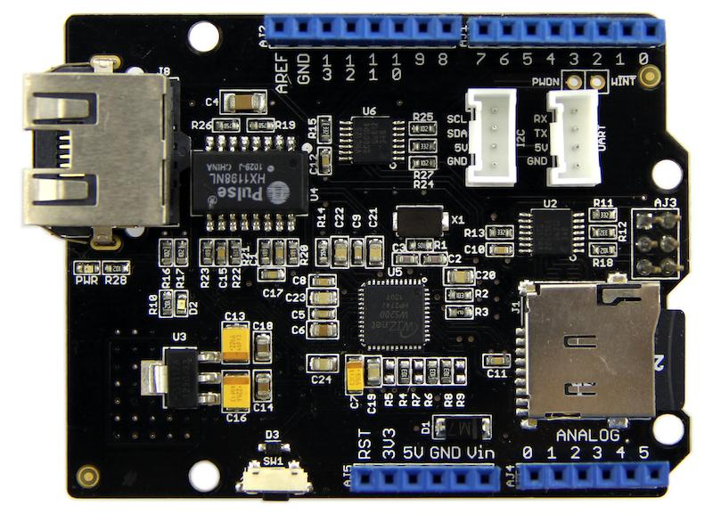
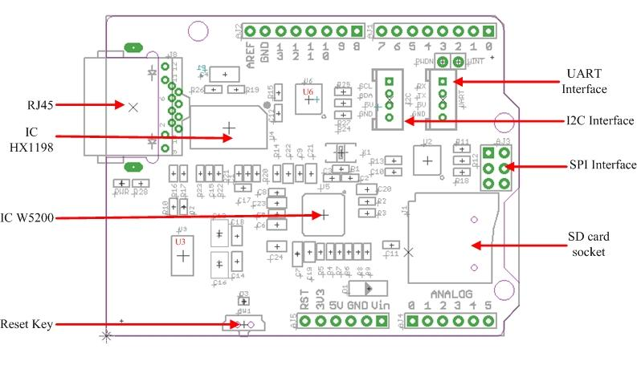
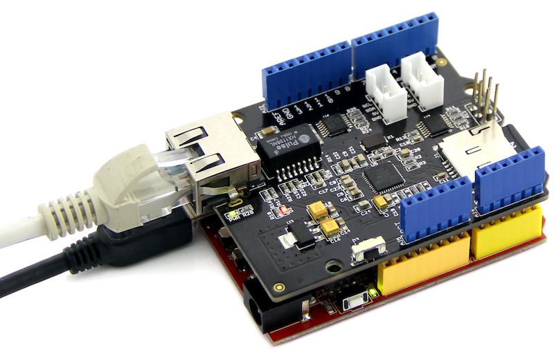
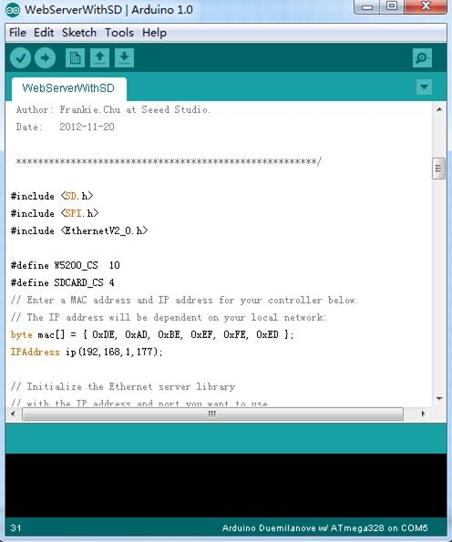
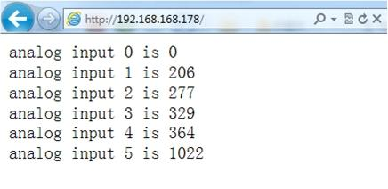
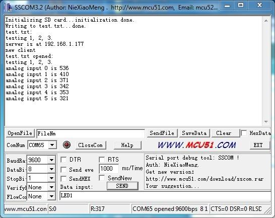
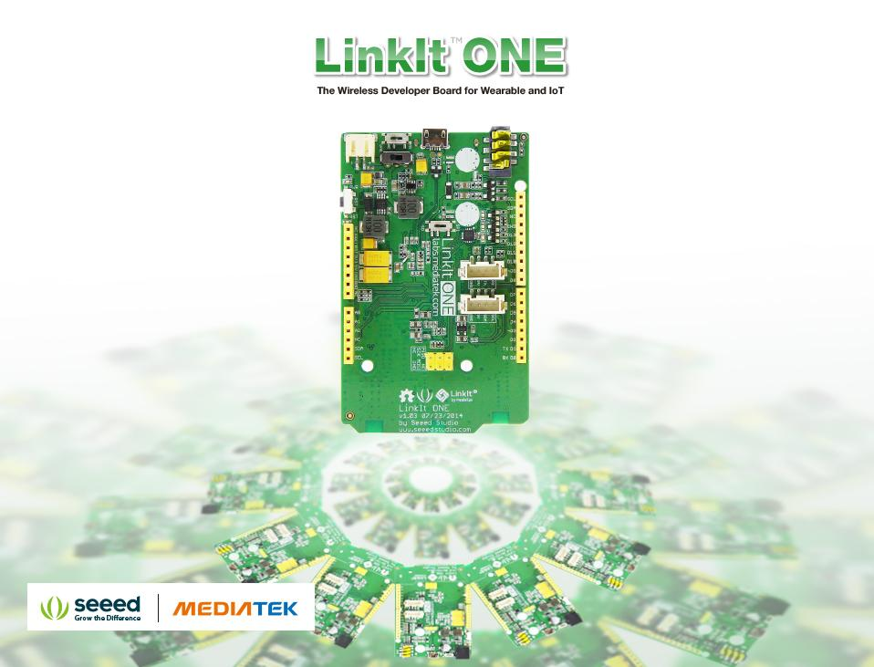
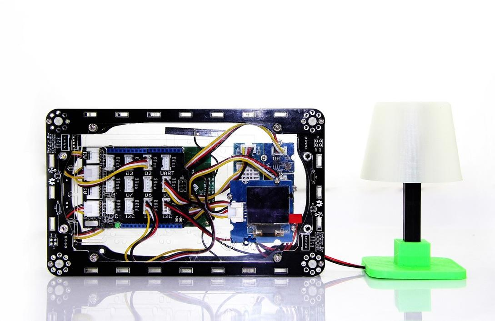
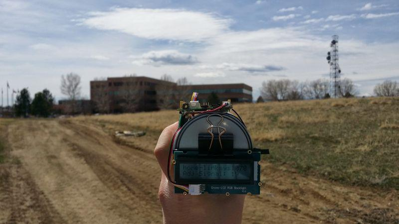

Your Ethernet Shield gets a total renewal now! This shield provides you instant Internet connectivity with a high spec Ethernet controller, W5200, with twice the buffer size of v1.0 and support for up to eight simultaneous TCP/UDP connections. An included SD slot enables applications that require storing large amounts of data, like IoT data logging. Thanks to a lowered RJ45 pot, you can flexibly add most of shields on top of this Ethernet Shield.
Model: SLD91000P


Hardware Configuration
RJ45: Ethernet Port;
IC HX1198: 10/100BASE-T signal port;
IC W5200: a hardwired TCP/IP Ethernet Controller;
U3: IC CJ117, low dropout linear regulator;
U6: IC 74VHC125PW, quad buffer;
Reset KEY: Reset Ethernet shield and Arduino when pressed;
SD card: support Micro SD card in FAT16 or FAT32; maximum storage is 2GB.
Pins usage on Arduino
D4: SD card chip select
D10: W5200 Chip Select
D11: SPI MOSI
D12: SPI MISO
D13: SPI SCK
Notice:
Both W5200 and SD card communicate with Arduino via SPI bus. Pin 10 and pin 4 are chip select pins for W5200 and SD slot. They cannot be used as general I/O.
We are going to build a simple web server that answer request from a client and store the readings from A0 through A5 to SD card.
Step 1: Hookup
1. Mount Ethernet Shield v2.0 to your Arduino;
2. Connect the shield to your computer or a network hub or a router with a standard Ethernet cable;
3. Connect Arduino to PC via USB cable;
4. Insert an SD card to the SD card slot.

Step 2: Upload the program
1. Download the library：Ethernet Shield V2.0 Library Note: Depreciated/Old Library for 1.0.x IDE: Link.
2. Unzip and put it in the libraries file of Arduino IDE by the path: ..\arduino-1.0.1\libraries.
3. Restart the Arduino IDE.
4. Open the example "WebServerWithSD" via the path: File --> Examples --> EthernetV2.0 --> WebServerWithSD. This example shows you how to build up a simple web server that displays the readings of anolog A0 through A5 when requested. After that, store those readings into SD card.
Note:
This new library covers all functions included in the build-in Ethernet library of Arduino IDE. You can use other examples in the same way as that in the preceding Ethernet library.
5. Upload the program to Arduino. If you do not know how to upload code, please click here.

In this code ,we have defined pin 4 as SD card chip select port and pin 10 as W5200 chip select port.
Firstly, it will send a link to this client if there is a client requesting access to this server.Then send the value of each analog input pin to the network.
Finally you can view each analog pin by opening SD Card file.
Step 3: Results
Open a web browser and enter the IP address of your controller. It's dependent on your local network but used to be 192.168.168.178. Then you should find the readings of A0 through A5 popping up as shown below.

To check what's going on to the SD card, open the serial monitor. You can use the built-in serial monitor of Arduino IDE or a serial monitor tool as us. After opening a serial monitor, you can read the content of file "test.txt" which we created to store the readings of analog pins.

Notice:
1） Make sure the Ethernet Shield and your computer are in the same local network.
2） Once the code has been successfully uploaded, it's fine to disconnect the board from your computer and apply independent power to it, leaving it run alone.
Depreciated/Old Version of Ethernet Shield V2.0 Library
Ethernet Shield V2.0 eagle files
It's a pity that we don't have any demo about Ethernet Shield in the Recipe yet.
Post your awesome project about Ethernet Shield to win $100 Coupon! Please feel free to contact us: recipe@seeed.cc
Here we introduce some projects about LinkIt ONE.

The LinkIt ONE development board is an open source, high performance board for prototyping Wearables and IoT devices.
It's based on the world's leading SoC for Wearables, MediaTek Aster (MT2502) combined with high performance Wi-Fi (MT5931)
and GPS (MT3332) chipsets to provide you with access to all the features of MediaTek LinkIt.
It also provides similar pin-out features to Arduino boards, making it easy for you to connect to various sensors, peripherals, and Arduino shields.

This is an IoT demo make by LinkIt ONE.
With this demo, we can:

Make a focused antenna with a pringles can.
More Awesome Projects by LinkIt ONE
Born with the spirit of making and sharing, that is what we believe makes a maker.
And only because of this, the open source community can be as prosperous as it is today.
It does not matter what you are and what you have made, hacker, maker, artist or engineers.
As long as you start sharing your works with others, you are being part of the open source community and you are making your contributions.
Now share your awesome projects with us on Recipe, and win a chance to become the Core User of Seeed.
Get more information about Core User please email to: recipe@seeed.cc